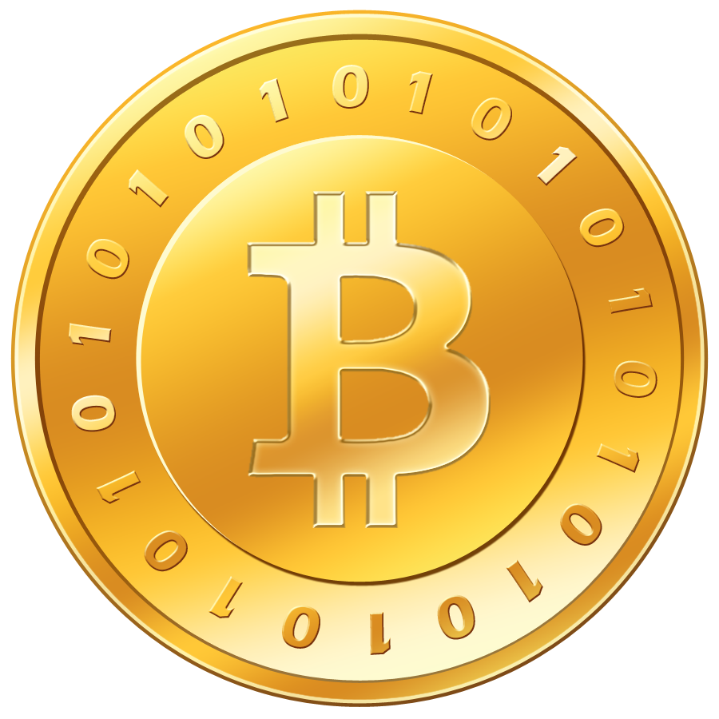

To understand why El Salvador's decision was significant, it helps to understand El Salvador's unusual monetary situation.

El Salvador dollarised in 2001. The government abolished the colón, its national currency, and replaced it with the US dollar as the country's sole legal tender. This was not an uncommon move among small, open economies that lacked the credibility or scale to maintain their own stable currency. Ecuador did the same thing in 2000; Panama has used the dollar since 1904.
Dollarisation brings stability (El Salvador's inflation tracked US inflation rather than any domestic monetary experiment), but it comes at a cost. The country surrendered its monetary sovereignty entirely. It cannot print money in a crisis. It cannot devalue to boost exports. It cannot set interest rates. It is a monetary subject of the Federal Reserve, even though the Fed has no mandate to consider El Salvador's economic conditions.
By 2021, El Salvador's economy had several persistent challenges. Remittances from the Salvadoran diaspora in the United States accounted for roughly 20–23% of GDP, among the highest ratios in the world. The fees on those transfers were real, if often overstated: World Bank data put the average cost of sending money to El Salvador at roughly 3%, with small cash-pickup transfers costing more, and a significant portion of the population was unbanked or underbanked. Lightning Network payments settled in Bitcoin could reduce those fees to near zero. This was the most concrete economic case Bukele made for the Bitcoin Law.